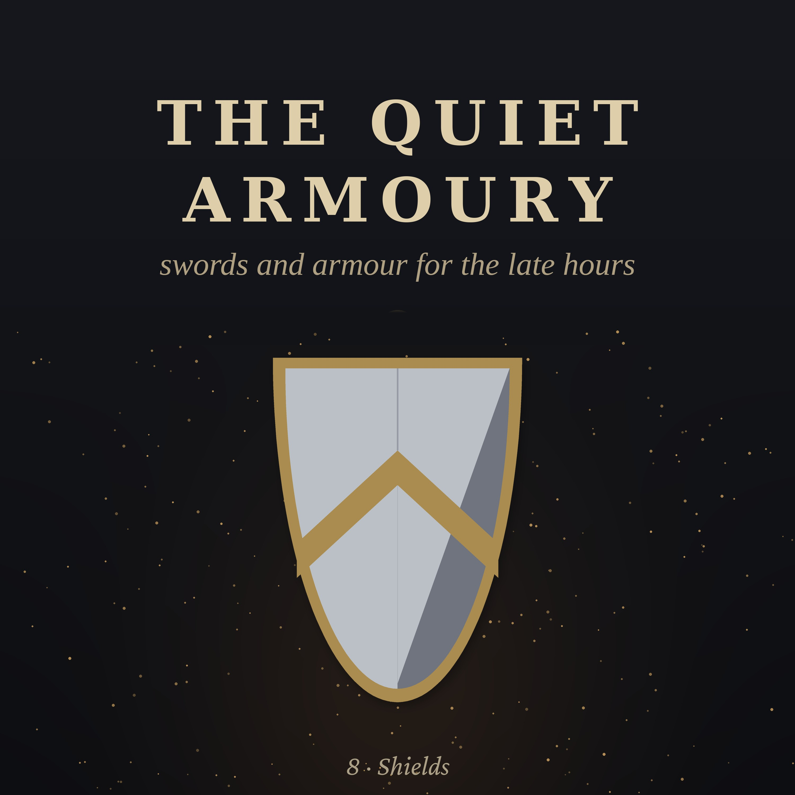

The Quiet Armoury · Episode 8 · 38 min
Shields
Of everything people carried into a fight, the shield is the only thing made entirely to protect someone. A spring evening around the year 900, on a Norwegian fjord: you and your sister paint the shields for a new ship, half yellow, half black... Inside: wood, hide and wicker, the bronze shields that were never meant for battle, a Spartan mother's 'with it, or on it', the Roman shield wall, the Viking round shield, the kite shields of the Bayeux Tapestry, how painted shields became heraldry, the shields that walked, the small shields of the duel, shields far beyond Europe, and the shield's return in our own time. Chapters: Wood, hide and wicker · The bronze shields that were not · With it, or on it · The Roman wall · The round shield · The king's shield · The shield wall · Three shields · The kite · Painted signs · The words we keep · Shields that walked · The small shields · Elsewhere · The shield comes back · The ship. Read by a synthetic voice; script written and fact-checked by the show's team. Additional sounds: Joseph Sardin, BigSoundBank.com (CC0).
The script
Of all the things people have carried into a fight, the shield is the only one made entirely to protect someone.
A sword is for striking. A spear is for reaching. Armour is for wearing. But a shield is a wall that you hold in your hand... a wall you can lift, turn, push, and set down beside the wall of the man next to you. For thousands of years, in almost every land, it was the first thing a soldier was given, and the last thing he let go of.
The Quiet Armoury. Episode eight... shields.
It is an evening in late spring, around the year nine hundred, on the west coast of Norway, on the shore of a long, deep fjord.
The ship is drawn up on rollers beside a long boathouse, its tall prow curving up against the pale evening sky. It is new... the smell of fresh tar and pine is everywhere. In a few weeks, when the weather settles, it will sail.
You are fourteen. Your father is a carpenter who builds ships and fits them out. And tonight, with your older sister, by the light that lasts so long in a northern spring, you are painting shields.
There are thirty-two of them for this ship, one for each oar. They are stacked against the wall of the boathouse, round and pale, freshly made. Your sister paints half of each shield with yellow... ochre, ground and mixed with linseed oil. You paint the other half black... soot, mixed with oil. When they are dry, they will be hung along the outside of the ship's rail, overlapping one another, yellow and black, yellow and black, the whole length of the ship.
Your father says that from the shore, they make the ship look like a long golden serpent with black scales. Your sister says they make it look like a row of buttercups. Your father says nothing more about it.
But before the shields are dry, let us go back a long way, to the first shield of all.
Chapter one. Wood, hide and wicker.
The first shields were made of whatever was at hand. A piece of hide stretched on a frame. A board of wood. A woven mat of wicker, like a basket, sometimes covered in leather.
Almost none of them survive. Wood and leather and wicker rot away in the ground. We know them mainly from pictures... carved on rock, painted on pots, cut into the walls of tombs. Warriors in ancient Egypt, four thousand years ago, are shown with tall shields with rounded tops, made of wood covered in cowhide, with the hair still on, in patches of brown and white.
A shield does not have to be hard to be useful. A shield of several layers of hide, or of thin wood covered in rawhide, is light and tough, and it does something that a hard shield cannot. It gives a little when it is struck. A blow that would split a stiff board sinks into the hide and stops.
That simple fact will matter later tonight.
Chapter two. The bronze shields that were not.
In the Bronze Age, three thousand years ago, people in Britain, Ireland and Scandinavia made round shields of beaten bronze, decorated with rings of little raised bosses and ribs, like ripples spreading on a pond. They are beautiful, and many have been found in bogs and rivers, where they were placed on purpose, as offerings.
For a long time, people assumed these were the shields of Bronze Age warriors.
Then, in the early nineteen sixties, an archaeologist named John Coles decided to test them. He had copies made, of the same thin bronze, and of leather, shaped like the leather shields that were also known from that time. And then he struck them with a copy of a Bronze Age sword.
The bronze shield was cut almost in two by a single blow. It was only about a millimetre thick. The leather shield, hardened by soaking it in hot water and letting it dry in shape, took blow after blow and held.
So the beautiful bronze shields were probably not for battle at all. They were for display, for ceremony, for the gods. The shields people really fought with were the plain, dull leather and wooden ones... which have almost all rotted away.
It is one of the nicest experiments in archaeology. It took an afternoon, and changed what people thought for good.
Chapter three. With it, or on it.
In ancient Greece, the citizen soldier, the hoplite, carried a great round shield, nearly a metre across, deep and bowl-shaped. It was made of wood, often faced with a thin skin of bronze, and it was heavy... perhaps seven kilograms.
It had a clever grip. In the centre, on the inside, there was a bronze band, the arm band, which the soldier slid his forearm through up to the elbow. And at the rim, a handle, which he gripped with his hand. So the weight of the shield was carried on the whole forearm, not the wrist. And because the shield was so deep, its upper rim could rest on his shoulder when he stood in line, waiting.
In the battle line, each man's shield covered his own left side, and half of the man to his left. So every soldier depended on his neighbour's shield to protect his right side. A man who ran away, and threw down his shield, did not just save himself. He opened a gap in the wall for everyone around him.
The Greeks had a saying about it, which a later writer put into the mouth of a Spartan mother, handing her son his shield before a war. Come back with it... or on it. With your shield, alive and victorious. Or carried home lying on it, dead, as the fallen were. But never without it.
The faces of the Greek shields were painted, often with a single bold sign... a lion, a bull, a scorpion, a snake, an eye, or a letter. Each man chose his own, at first. Later, some cities had their soldiers paint the same sign on every shield. The Spartans, it is said, painted the Greek letter lambda, an upturned V, for Lacedaemon, their country's name. An old comic poet mentions it. Whether every Spartan shield bore it, nobody can now say.
A man could lose his helmet, or his breastplate, in battle, and no one would think less of him. Those protected only him. To lose your shield was a disgrace, because the shield protected the line.
Chapter four. The Roman wall.
The Roman legionary carried a very different shield, the scutum. It was tall and curved, like a section cut from a great barrel... about a metre and a quarter high, wrapping around the body from the shoulder to the knee. It was made of thin strips of wood, glued together in layers, crosswise, like modern plywood, covered with leather or linen, and painted. At its centre was a domed metal boss, behind which the hand held a single horizontal grip.
It was heavy. A modern copy weighs about ten kilograms. But it was not meant to be waved about. It was meant to be planted, pushed, and hidden behind.
Only one Roman shield of this kind has survived almost whole. It was found in the nineteen thirties, in the ruins of a Roman frontier town in Syria, called Dura-Europos, buried under a collapsed wall during a siege in the two hundreds. It is painted red, with an eagle, a lion, and winged figures of Victory, still bright after seventeen hundred years. It is kept today in a university museum in America.
The Romans could do something with these shields that people still find astonishing. In a siege, a group of soldiers could lock their shields together... the front rank holding theirs forward, the ranks behind holding theirs flat over their heads, overlapping, like the shell of a tortoise. They called it the testudo... the tortoise. Under it, they could walk right up to a wall, with stones and arrows bouncing off the roof.
A Roman writer says that a tortoise of shields was once so strong that men could run up onto it, and a horse and cart could have been driven across it. That may be a slight exaggeration. But not by much.
Chapter five. The round shield.
Back on the shore of the fjord, the yellow paint is drying on the first shields. Your father picks one up to look at the back, and you see how it is made.
It is round, a little less than a metre across. It is made of seven thin planks of spruce, set side by side, edge to edge, glued with hide glue. The planks are thickest in the middle, and taper toward the edges, so that the shield is light at the rim, where it is easiest to swing. It weighs, perhaps, three or four kilograms.
In the centre, there is a round hole, and over the hole, on the front, a dome of iron... the boss... riveted on through the planks. Behind the boss, across the hole, runs a wooden handle, as thick as your wrist, strengthened with an iron strip. You hold the shield by that handle, with your fist inside the boss. There is no arm strap. The shield is held at arm's length, in the hand alone.
That makes it light and quick. You can turn it, punch with the boss, swing the rim, lift it high against an arrow, drop it low against a spear thrust at your legs. It is not a wall you hide behind. It is a weapon, as much as a defence.
The face of the shield will be covered in a thin layer of rawhide, glued on, and around the rim, a strip of rawhide is stitched, through little holes along the edge, and left to dry. As it dries, the rawhide shrinks, and grips the planks tight, so that they cannot split apart when a blade strikes the rim.
The rawhide is ready for tomorrow, soaking in a tub by the wall. It is cowhide, scraped clean of hair and fat, cut into long strips, and left in water until it is soft and slippery, like wet cloth.
Tomorrow, your father will lay a strip along the edge of each shield, folded over the rim, front and back, and you will push an awl through the little holes along the edge, and he will draw a thong of hide through, and pull it tight, and on to the next hole, all the way around. As the hide dries over the next days, it will shrink, and tighten, and set as hard as horn. A rim edged that way can take a sword blow without splitting.
The glue is in a clay pot by the fire. It is made by boiling scraps of hide, hooves and bones in water for a long time, until it turns to a thick brown jelly. It smells terrible. Your sister says it smells like a dead cow. Your father says that is because it is one.
The poets of the north had a word for the shield that you will hear in the long poems by the fire: the linden. The lime tree. Because the best shields, they said, were made of lime wood, which is light and does not split easily. Your father prefers spruce. It is what grows here.
The ship that will carry these shields is very like a ship found, a thousand years later, in a great burial mound at a place called Gokstad, in southern Norway. In it were sixty-four shields, painted black and yellow, just like these. For a long time, people thought they were only for show... too thin, too light, for real fighting. A few years ago, a researcher looked at them again, carefully, and found the little stitching holes and the shaped rim that show they had once been covered and edged with hide. They were real shields, made for real use, and painted for pride.
Chapter six. The king's shield.
Not every round shield was plain.
In England, in a great burial mound at a place called Sutton Hoo, in Suffolk, archaeologists in nineteen thirty-nine found the grave of an Anglo-Saxon king, buried around the year six hundred and twenty-five, in a whole ship, with his treasures around him. Among them was his shield.
The wood had rotted away to a dark stain in the sand. But its fittings survived. A great boss of iron, decorated with gilded bronze. And on the face of the shield, two fittings of gilt bronze and garnet: a bird of prey, with spread wings and a hooked beak, and a long, winding, flying dragon. They had been set on the shield's face, which had been covered in leather.
It is a shield made to be seen... the kind of shield a poet describes, gleaming in the hall. It may also have been carried into battle. Its owner, it seems, did not see why a shield could not be both.
Chapter seven. The shield wall.
When Norsemen fought on land, they stood in a line, shoulder to shoulder, shields overlapping, edge over edge. The shield wall. The men in front held their shields together, and the men behind held theirs up over their heads, or pushed against the backs of those in front, and stabbed with spears over the shoulders of the front rank.
When two shield walls met, it became a pushing match, like the push of pike we heard about in the last episode, but closer... face to face, the shields grinding against each other, men stabbing at feet and faces through the gaps, and hacking at the shields themselves with axes, to split them, or to hook their rims down.
The old poems call a battle the meeting of shields, and the weather of shields, and the din of shields.
The most famous shield wall in English history stood on a ridge near Hastings, on the fourteenth of October in the year ten sixty-six. The English army of King Harold stood along the crest of the hill, shield to shield, and for most of a long day, the Norman knights and archers could not break it. Charge after charge went up the slope, and came back down.
In the end, the wall broke... perhaps because some of the English ran down the hill after Normans who seemed to be fleeing, and were caught on the open slope, and perhaps because the king himself was killed. But for hours, a line of men with round shields, standing still, held off the best cavalry in Europe.
Chapter eight. Three shields.
The sagas of Iceland, written down two or three hundred years after your time, describe a kind of formal duel called the holmgang... the going to the island, because duels were often fought on small islands, where neither man could run, and nobody could interfere.
One saga sets out its rules. A cloak was pegged out on the ground, with loops at its corners, and a ring of hazel stakes around it. Each fighter was allowed three shields. When one shield was hacked to pieces, his second, standing behind him, handed him the next. When all three were destroyed, he had to fight on without one, or give in. The man who first stepped off the cloak was said to have run away. And the first to draw blood could end the fight, and the loser paid a fine of silver to be set free.
Three shields. That tells you how quickly a wooden shield could be destroyed by a sword and an axe. And it tells you something else: that the shield was the first thing a fighter expected to lose... so that he would not lose anything else.
Chapter nine. The kite.
The Normans at Hastings carried a different shape of shield. You can see it in the long embroidered cloth that tells the story of the battle, the Bayeux Tapestry. It is long and narrow, rounded at the top and pointed at the bottom, like a kite, or a teardrop.
It was made for a horseman. A round shield, held on a horse, leaves the rider's leg bare. The long tail of the kite shield protects the left leg, all the way down to the knee, while the rider holds the reins in his left hand. It was held, not by a handle behind a boss, but by leather straps across the back, through which the forearm went, with another long strap around the neck, so that the shield could hang from the shoulders when the hands were busy.
Over the next two hundred years, as armour improved, the kite shield grew shorter and flatter at the top. By the twelve hundreds, it had become the classic knight's shield... a triangle, flat on top, curving down to a point. We call it, today, the heater shield, because it looks rather like the base of a flat iron.
And it was on shields like these that something new appeared.
Chapter ten. Painted signs.
A knight in a closed helmet, in the twelve hundreds, had no face. In a battle, or a tournament, nobody could tell who he was. So knights began to paint their shields with simple, bold designs... a colour divided by a line, a bar, a cross, a chevron, a lion, an eagle, a star... and to use the same design always, on their shields, their banners, and the long cloth surcoats over their armour.
That was the beginning of heraldry.
Within a few generations, the designs became hereditary. A son carried his father's arms, perhaps with a small mark of difference to show which son he was. The designs grew into a whole language, with its own rules and its own old French words for colours and shapes. A knowledgeable person could look at a shield and tell you who the man was, his family, and often whether he was the eldest son.
Heralds, who at first were simply messengers and announcers at tournaments, became the experts who kept the records of who bore what. In some countries, heralds still do that job today, in offices with old leather books, and decide who may bear which arms.
Look closely at the badge of a football club, the logo of an old bank, the arms of a city, or the crest on a school blazer. Very often, the shape around it is the shape of a knight's shield.
The shield did not disappear from the knight's life entirely. It moved to the tournament.
For the joust, in the fourteen hundreds, armourers made special shields, small and slightly curved, faced with plates of horn or bone in a lattice, so that a lance point would catch on them rather than slide off, and the lance would break... which was the whole point of the exercise. And many of them had a notch cut into the upper corner, a little gap, where the knight could rest his own lance as he charged, while the shield still covered his chest. Some of these jousting shields, painted with the knight's arms or with mottoes and love tokens, are among the most beautiful survivors of the tournament.
Chapter eleven. The words we keep.
The Roman word for a shield, scutum, travelled a long way.
In old French, it became escu... a shield. A knight's squire was his escuier, the shield-bearer, as we heard in the episode about armour. A shield painted with a family's arms became an escutcheon, and English still uses that word for the shield shape on a coat of arms.
When a French king, in the twelve hundreds, struck a gold coin with his shield of arms on it, the coin was called an écu, a shield. Portuguese and Spanish coins were called escudos... shields... for centuries. Portugal used the escudo as its money until the euro replaced it.
And in England, a knight who owed his king service with his shield, for forty days a year, could pay money instead, if he preferred to stay at home. That payment was called scutage... shield money. It became one of the taxes the barons complained about, in the long list of complaints they brought to King John in twelve fifteen, at Runnymede, which we call Magna Carta.
Chapter twelve. Shields that walked.
As plate armour grew stronger, in the thirteen hundreds and fourteen hundreds, the knight needed his shield less and less, and finally put it away. His armour was his shield.
But the men who could not afford armour still needed shields. And for one kind of soldier, the shield grew enormous.
The crossbowman needed time to reload. To span a heavy crossbow, he had to set its foot on the ground, and wind the string back with a crank or a lever, and that took many seconds, with his head down and his hands busy. So he carried, or a helper carried for him, a pavise... a great tall shield, as tall as a man's chest or more, with a flat front and a long ridge down the middle, and a spike at the bottom to push it into the ground.
The crossbowman stood the pavise up in front of him, hid behind it to reload, and stepped out to shoot. A line of pavises, set up side by side, was a wooden wall that could be carried onto any battlefield.
The pavises of Bohemia were famous. In the fourteen-twenties, the Hussites, a religious movement of Czech townspeople and peasants, fought off one crusade after another sent against them by the princes of Europe. They had few knights. What they had were wagons... strong farm wagons, chained together into a ring, with pavises set up in the gaps, and handguns and crossbows firing from behind them. Many of those pavises were painted beautifully, with the chalice that was the Hussites' sign, and with the arms of their towns. Some survive in museums in Prague and Vienna, still bright. The man who taught the Hussites to fight this way was Jan Žižka, an ageing minor nobleman who had lost one eye as a young man and lost the other in battle, and went on commanding his armies, fully blind, from a wagon. It is said that he never lost a battle. His wagons, his pavises and his handguns beat the armoured knights of half of Europe, again and again, for a decade. The Czech word for that kind of handgun, píšťala, a pipe, may be one of the roots of our word pistol.
Chapter thirteen. The small shields.
At the other end of the scale, there was the buckler.
A buckler is a small round shield of steel or wood, no bigger than a dinner plate, held in the fist by a single handle behind its boss. It is no use at all against arrows, or against a charge. But in a fight between two men with swords, it is a wonderful thing... a little fist of steel that can knock a blade aside, cover the sword hand, and punch.
For a few hundred years, the sword and buckler were the weapons of the ordinary townsman, the apprentice, the servant, the traveller. The oldest fight book in Europe, from around the year thirteen hundred, is entirely about sword and buckler. In England, it was the weapon of the rowdy young men of the London streets, who were called swashbucklers... from the noise they made, swashing and clashing their swords against their bucklers to show off, and to frighten people.
In the Highlands of Scotland, the round shield survived the longest. The Highland targe was made of two layers of wood, set crosswise, covered in leather, decorated with brass studs and tooled patterns, and sometimes with a long steel spike screwed into the boss. Held on the left arm, with a broadsword in the right hand and a dirk... a long dagger... in the left hand behind the targe, it was the equipment of the Highland clansman until the last pitched battle fought on British soil, at Culloden, in seventeen forty-six.
And in the Italy of the Renaissance, a gentleman might own a rotella, or rondache... a round shield of steel, embossed with scenes from myths and battles, gilded and blued, so beautiful that it was never meant to be struck at all. Some of them are among the finest works of metal ever made. They were carried in processions, hung on palace walls, and given as gifts between princes.
Chapter fourteen. Elsewhere.
In India, the shield was the dhal... round, deeply domed, often made of rhinoceros or buffalo hide, hardened, lacquered and polished until it shone like dark glass, with four bosses of metal on its face, which covered the rivets of the handles behind. A dhal was light, very tough, and nearly waterproof. It was said that a good one could be used to carry water across a river.
In southern Africa, the Zulu warriors carried tall oval shields of cowhide, held by a stick laced down the back. The colours and patterns of the hide... black, white, red, dappled... showed which regiment a warrior belonged to, and whether he was a young man or a married veteran. All the shields of one regiment were matched, from the herds of the king.
In Australia, Aboriginal peoples made long narrow shields of wood, carved and painted, to deflect thrown spears and boomerangs. In New Guinea, great wooden shields were carved with spirit faces. In China and Japan, large wooden standing shields, a little like pavises, protected soldiers and archers. Everywhere people fought, they made shields. Everywhere, they decorated them.
In China, from the fifteen hundreds, a famous general named Qi Jiguang, defending the coast against pirates, trained soldiers to fight in small teams of twelve men. In the front of each team went shield men, with round shields of woven rattan... light, springy cane, coiled and bound... and a short sword or throwing spears. Rattan shields were light, cheap, and surprisingly tough, and they were used in China until the eighteen hundreds.
Chapter fifteen. The shield comes back.
When firearms came, the shield faded away. A musket ball went through any shield a man could carry. By the sixteen hundreds, the shield was a thing of ceremony, sport and the past.
And then, in the twentieth century, it came back.
Police forces, facing riots and thrown stones, took up tall shields again... first of wood or metal, then of clear, tough plastic, so that the man behind could see through it. Look at a line of police in riot gear, shields held edge to edge, and you are looking at a shield wall, very much like the one at Hastings. The front rank holds the shields together. The rank behind holds theirs up against what is thrown from above.
And soldiers and police who must go through doors into danger now carry ballistic shields... heavy, rectangular, made of layers of special fibres and ceramic, with a small window of thick armoured glass to look through, and sometimes a light on the front. They stop bullets that would pass through any steel a man could carry. They weigh as much as a Roman scutum, or more. And the people who carry them are taught, very carefully, to keep the shield in front, to move with the man beside them, and never to let it fall.
The Spartan mother would have understood.
Chapter sixteen. The ship.
It is late now on the shore of the fjord, though the sky is still pale in the north, the way it is in a Norwegian spring, never quite dark. The last shields are painted. The brushes are in a pot of oil. Your hands are yellow and black to the wrist.
Your father walks along the row of shields leaning against the boathouse wall, and touches each one lightly, to see if it is dry. Not yet. Tomorrow.
In a few days, the rawhide will be stitched on, the shields hung on the rail, and the ship will slide down the rollers into the water. When it goes out of the fjord, with its oars moving together and its shields shining along its side, people will come out of every farm along the shore to watch it pass.
Most of these shields will never be used in a fight. Some of them will be split, and mended, and split again. One or two will come home on the ship, years from now, carrying a man who did not come home standing. And one, perhaps, will hang on the wall of a hall for a hundred years, darker every year with smoke, until nobody remembers whose it was.
You sit on an upturned boat at the edge of the water, with your sister, and look at the long golden ship, and the row of round black and yellow shields drying in the twilight.
Your sister says it still looks like buttercups. This time, you agree.
The light on the water is silver now. Out in the fjord, a few seabirds are still calling, very far off. The ship's tall prow is black against the sky, and somewhere behind the boathouse, a dog is barking at nothing.
Your father puts out the little fire under the glue pot, and calls you both in.
Of all the things people have carried into a fight, the shield is the only one made entirely to protect someone.
And not only the one who carries it. The Greek soldier carried his shield for the man beside him. The Roman, for his whole tortoise. The Norseman, for his shield wall. They all knew the same thing.
The Norse had a word for a crowd of warriors standing close together, their shields overlapping, edge over edge, like the scales of a fish, or the shields on the rail of a ship.
Skjaldborg. The fortress of shields.
This story was read by a synthetic voice. If these stories keep you company at night, follow the show... it helps others find it.
Also from the late hours: Embers of History · Slow Orbit · Myth and Score
On YouTube: Opera Stories · Slow Orbit
Free line-by-line English translations of art songs
Enjoying the shows? Leave a tip (no fees)